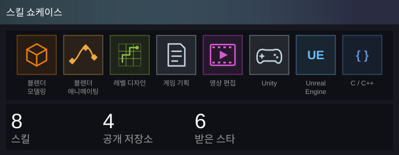
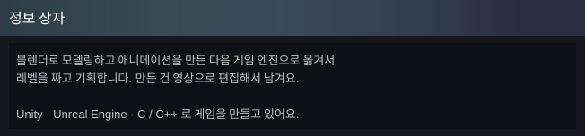
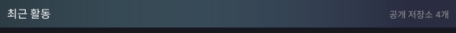

<!doctype html><meta charset="utf-8"><title>Preview</title><style>body{background:#0d1117;color:#e6edf3;font-family:-apple-system,Segoe UI,sans-serif;margin:0;padding:24px}article{max-width:880px;margin:auto;border:1px solid #30363d;border-radius:6px;padding:24px;line-height:1.5}img{max-width:100%;box-sizing:content-box}p{margin:0 0 16px}a{color:#4493f8}</style><article>
<p><a href="https://github.com/O3O-2022?tab=repositories"></a></p>
<div>
<a target="_blank" rel="noopener noreferrer" href="img/sidebar.svg"></a>
<a target="_blank" rel="noopener noreferrer" href="img/skills.svg"></a><br>
<a target="_blank" rel="noopener noreferrer" href="img/info.svg"></a><br>
<a target="_blank" rel="noopener noreferrer" href="img/activity-top.svg"></a><br>
<a href="https://github.com/O3O-2022/MiSide-PeaceMode"></a><br>
<a href="https://github.com/O3O-2022/PeoplePlayground-Korean"></a><br>
<a href="https://github.com/O3O-2022/AnimeFlow"></a><br>
<a href="https://github.com/O3O-2022/workspace-2"></a><br>
<a href="https://github.com/O3O-2022?tab=repositories"></a>
</div>
<br clear="all">
<details>
<summary><b>활동 통계 펼치기</b></summary>
<br>
<a target="_blank" rel="noopener noreferrer nofollow" href="https://camo.githubusercontent.com/298c116ffe8175f1ead934c890778d163bff6042b4cfdc6e6830cb1429af45f0/68747470733a2f2f73747265616b2d73746174732e64656d6f6c61622e636f6d2f3f757365723d4f334f2d32303232266261636b67726f756e643d31363137314626626f726465723d3242324434342672696e673d35374342444526666972653d393042413343266375727253747265616b4e756d3d46464646464626736964654e756d733d454245424542266375727253747265616b4c6162656c3d35374342444526736964654c6162656c733d3936393639362664617465733d393639363936266c6f63616c653d6b6f"></a>
<a target="_blank" rel="noopener noreferrer nofollow" href="https://raw.githubusercontent.com/O3O-2022/O3O-2022/main/profile-3d-contrib/profile-night-view.svg"></a>
<a target="_blank" rel="noopener noreferrer nofollow" href="https://raw.githubusercontent.com/O3O-2022/O3O-2022/main/profile-summary-card-output/github_dark/0-profile-details.svg"></a>
<a target="_blank" rel="noopener noreferrer nofollow" href="https://raw.githubusercontent.com/O3O-2022/O3O-2022/main/profile-summary-card-output/github_dark/1-repos-per-language.svg"></a>
<a target="_blank" rel="noopener noreferrer nofollow" href="https://raw.githubusercontent.com/O3O-2022/O3O-2022/main/profile-summary-card-output/github_dark/2-most-commit-language.svg"></a>
</details>
<themed-picture data-catalyst-inline="true"><picture>
  <source media="(prefers-color-scheme: dark)" srcset="https://raw.githubusercontent.com/O3O-2022/O3O-2022/output/snake-dark.svg">
  <source media="(prefers-color-scheme: light)" srcset="https://raw.githubusercontent.com/O3O-2022/O3O-2022/output/snake.svg">
  
</picture></themed-picture></article>
